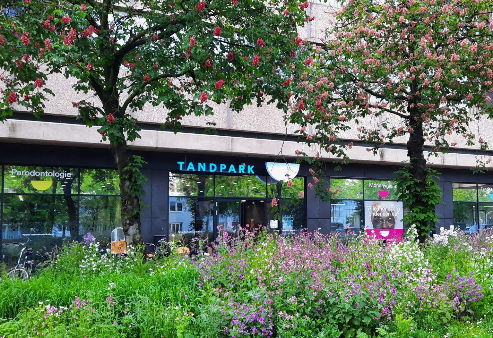
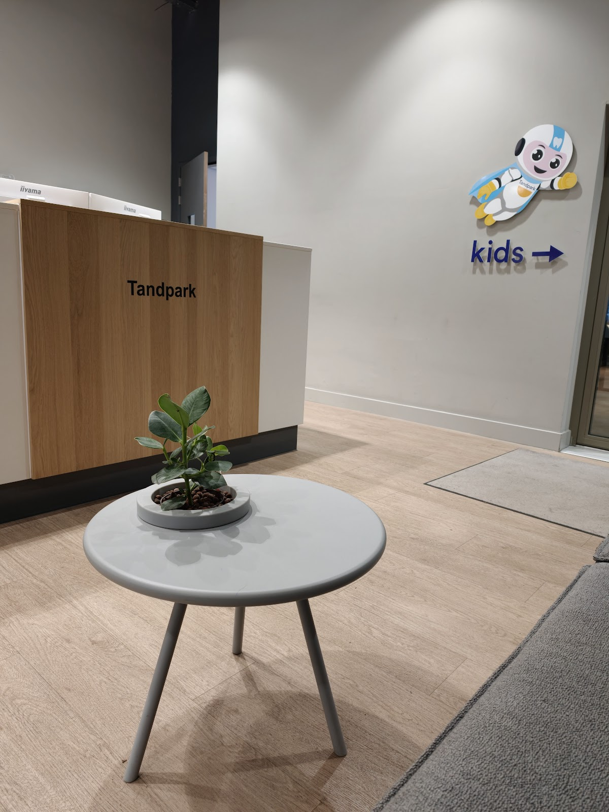
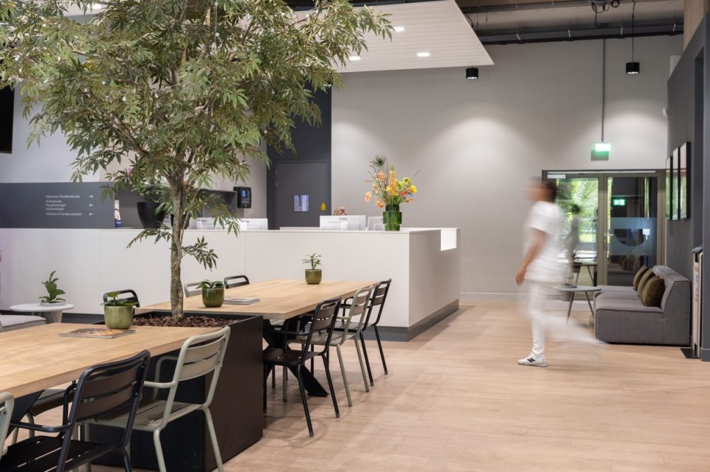
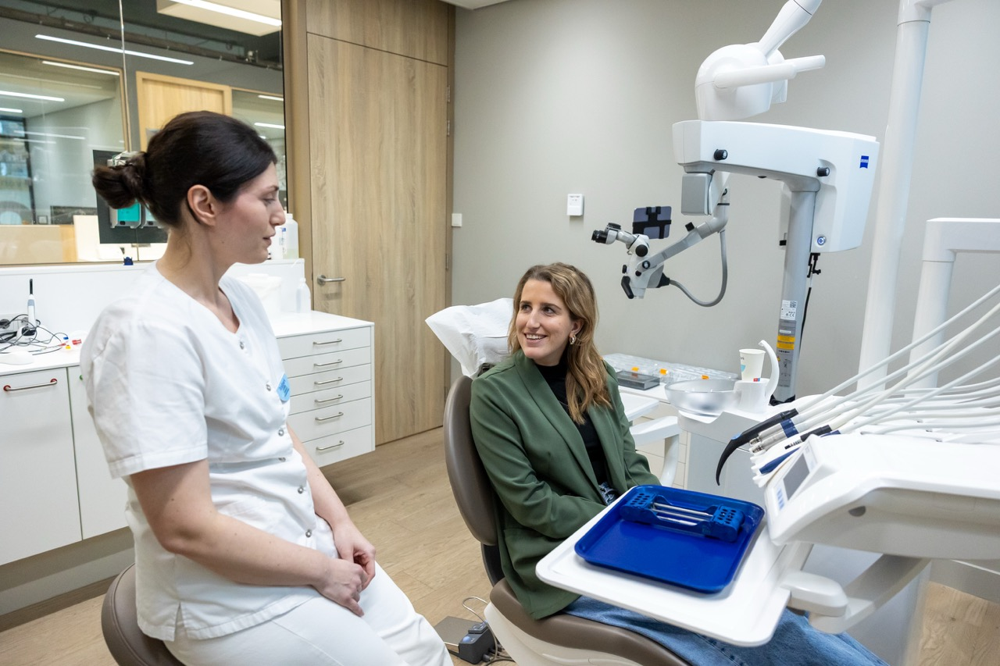
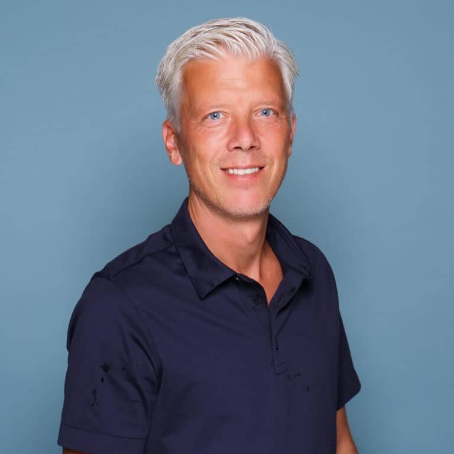
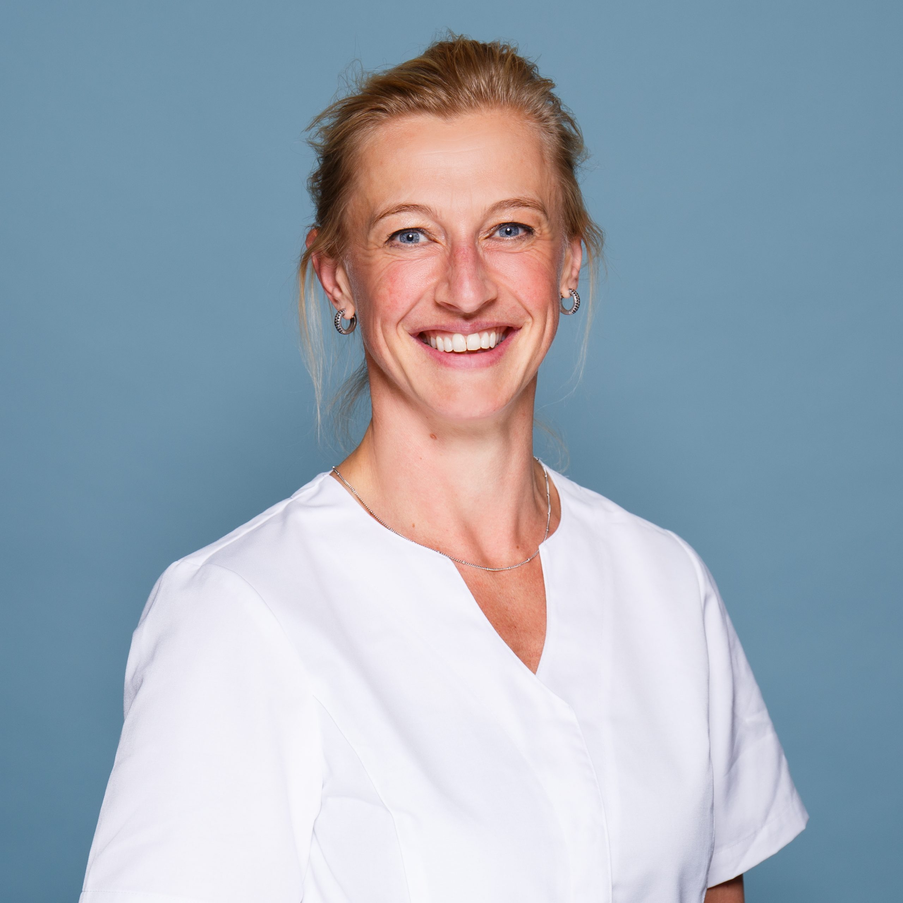
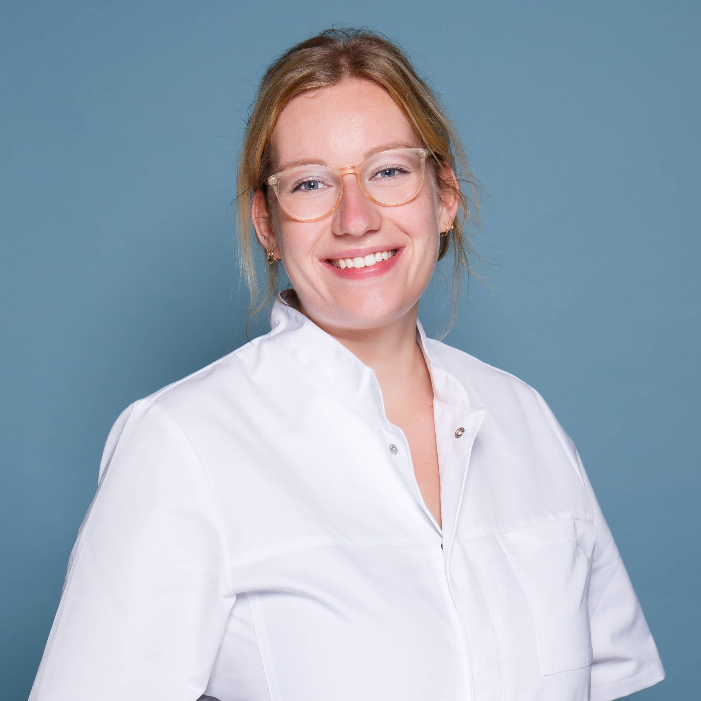
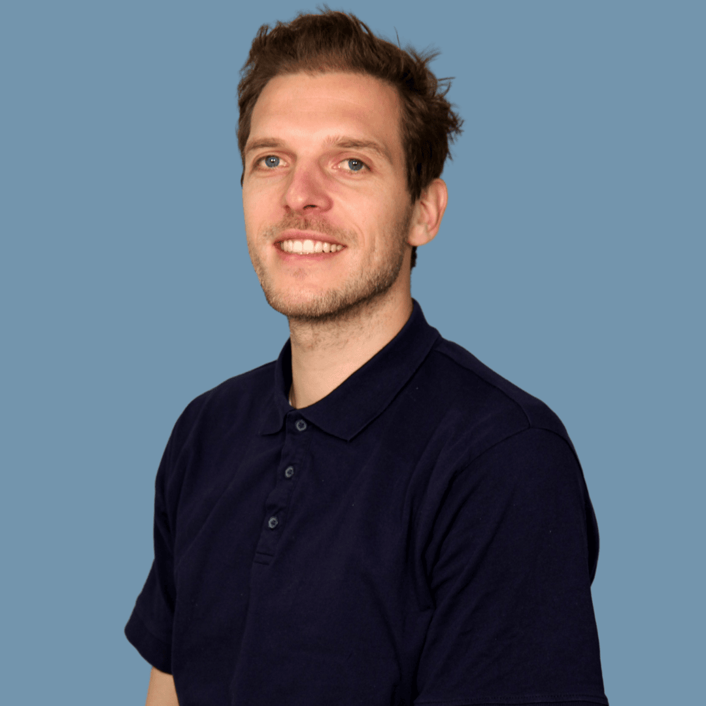
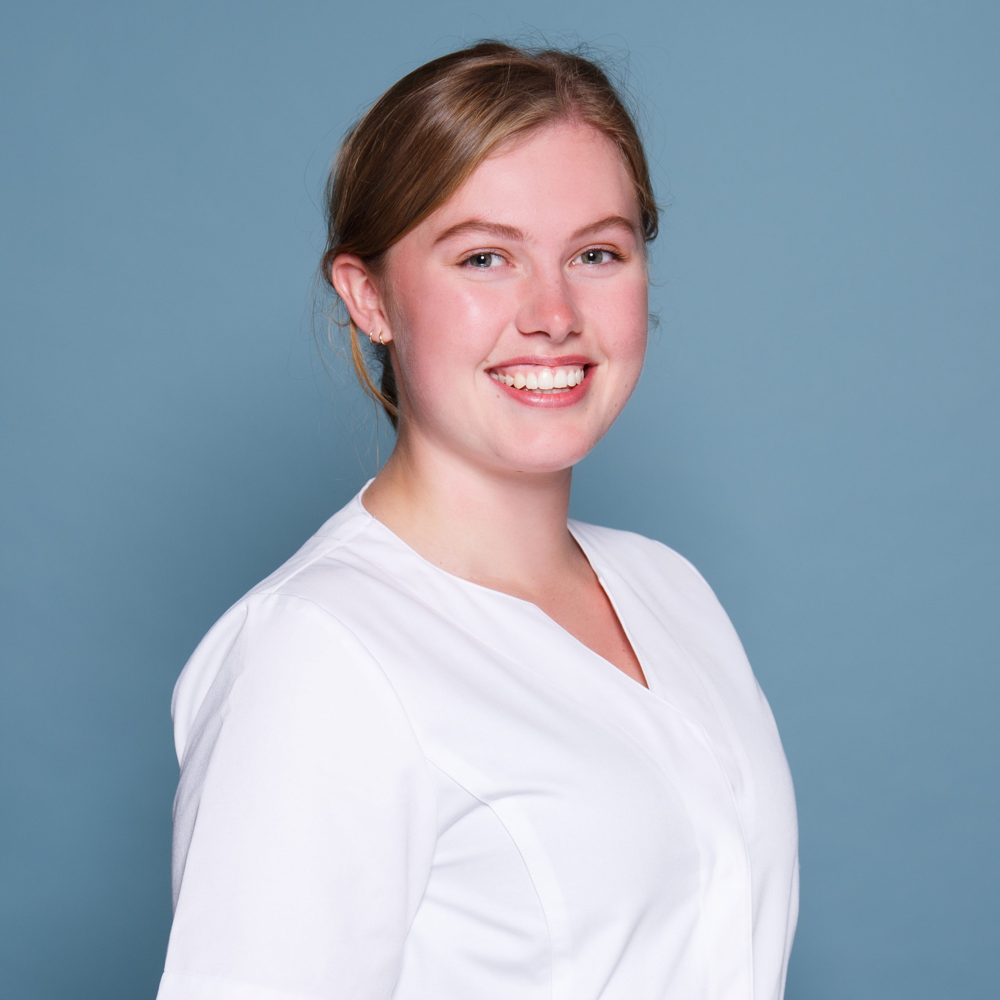

NOS, RTL Nieuws en Editie NL
Voor het WK in Qatar kwamen de spelers van het Nederlands elftal bij Tandpark langs. Tandarts Roel de Maat vertelde erover, en over het belang van een goed gebit voor prestaties.
Tandheelkunde en mondzorg aan de Velperweg, Arnhem
Gewone tandartsen, orthodontisten, mondhygiënisten en specialisten voor kinderen en ouderen. Allemaal onder één dak, op de begane grond van House of Arnhem.

Bij ernstige pijn helpen we je binnen 24 uur, behalve in het weekend en op feestdagen. Daar houden we elke dag vaste tijden voor vrij.
Bel 026 303 1247De telefoon is op werkdagen bereikbaar van 8:15 tot 12:45 en van 13:30 tot 16:45. Mailen kan altijd.
info@tandpark.nlSinds 1 juni 2024 gebruiken alle tandartsen in Arnhem dezelfde spoeddienst: Dental365 Arnhem.
Bel 0900-1515Van je halfjaarlijkse controle tot implantologie of een wortelkanaalbehandeling. De specialisten werken samen, en met tandtechnisch lab Excent als directe buurman.
Kids, parodontologie, mondhygiëne en ouderenzorg zijn deelbehandelingen: je blijft gewoon patiënt bij je eigen tandarts.

Algemene tandheelkunde
Controle, vullingen, kroon- en brugwerk
Kids
Rustig, vriendelijk en met ruimte voor jou als ouder
Orthodontie
Eigen nummer: 026 741 01 41
Mondhygiëne
Gebitsreiniging en uitleg over poetsen en ragertjes
Parodontologie
Zorg voor het tandvlees
Implantologie en endodontologie
Implantaten en wortelkanaalbehandelingen
Tandprothetiek
Gebitsprotheses gemaakt met 3D-scans
Ouderenzorg
Gerodontologie: mondzorg voor senioren

Arnhem is een groene stad met dertien stadsparken. Tandpark is er één bij. Je vindt ons op de begane grond van het voormalige Postbankgebouw uit 1968, een landmark aan de rand van het centrum.
Of je nu fluitend naar de tandarts gaat of al jaren niet bent geweest: je bent welkom.
Samen met het Radboudumc
Masterstudenten Tandheelkunde van het Radboudumc lopen in hun laatste studiejaar stage bij ons. Wij brengen jarenlange ervaring, zij nieuwe kennis. We zijn ook erkend leerbedrijf voor tandartsassistenten van het Rijn IJssel college en werken samen met de hbo-opleiding mondzorgkunde.

De praktijk is van tandartsen Roel de Maat en Jelly van der Brugge. Met mondhygiënisten, preventie- en tandartsassistenten en de balie staat er een groot team klaar. De meeste behandelaren werken al jaren in Arnhem en omgeving.





"Ik heb een panische angst voor de tandarts en hier wordt enorm goed rekening mee gehouden. Grote complimenten aan mondhygiënist Maarten. Daar ga ik tegenwoordig al bijna fluitend naar toe!"
"Ik vind het een prima praktijk, we komen er met het hele gezin. Voor onze jonge kinderen is de kindertandarts prettig, rustig en vriendelijk maar kordaat waar nodig. Als ouder krijg je ook de ruimte er voor je kind te zijn."
"Op een woensdagavond een voortand eruit, de volgende morgen al weer perfect gerepareerd door Casper Veenemans."
"Weet waar ik aan toe ben. Communicatie is top. Zowel rond de afspraken als tijdens de behandeling. Grote praktijk, en toch voel ik mij niet als nummer behandeld."
"Tandpark is een mooie ruime praktijk. Het ondersteunend personeel is vriendelijk en behulpzaam en de specialisten ter zake kundig."
NOS, RTL Nieuws en Editie NL
Voor het WK in Qatar kwamen de spelers van het Nederlands elftal bij Tandpark langs. Tandarts Roel de Maat vertelde erover, en over het belang van een goed gebit voor prestaties.
De Gelderlander
Hoe we met 3D-scans en digitale technieken comfortabele, nauwkeurige en natuurlijk ogende gebitsprotheses maken. Geen ouderwetse happen meer.
SBS
Roel de Maat over zijn werk, nieuwe technieken in de tandheelkunde en een kijkje achter de schermen bij de praktijk.
Velperweg 49A, 6824 BG Arnhem. Begane grond van House of Arnhem.
40 eigen parkeerplekken op het parkeerdek, met 2 laadpalen. Rijd in via de Velperweg en parkeer bovenop. Vanuit de garage neem je de lift een verdieping omlaag naar de praktijkingang.
Bus 1, 7, 26 en 29 stoppen voor de deur, bij halte Hoflaan en halte Raapopseweg. Station Presikhaaf en Velperpoort liggen op loopafstand.
Afzetten en ophalen kan veilig bij de Kiss & Ride, recht voor de ingang.
026 303 1247
info@tandpark.nl
Orthodontie: 026 741 01 41
| Maandag | 08:00 tot 16:45 |
|---|---|
| Dinsdag | 08:00 tot 16:45 |
| Woensdag | 08:00 tot 16:45 |
| Donderdag | 08:00 tot 16:45 |
| Vrijdag | 08:00 tot 16:45 |
| Zaterdag en zondag | Gesloten |
Telefonisch bereikbaar van 8:15 tot 12:45 en van 13:30 tot 16:45. Spoed buiten deze tijden: Dental365 Arnhem, 0900-1515.